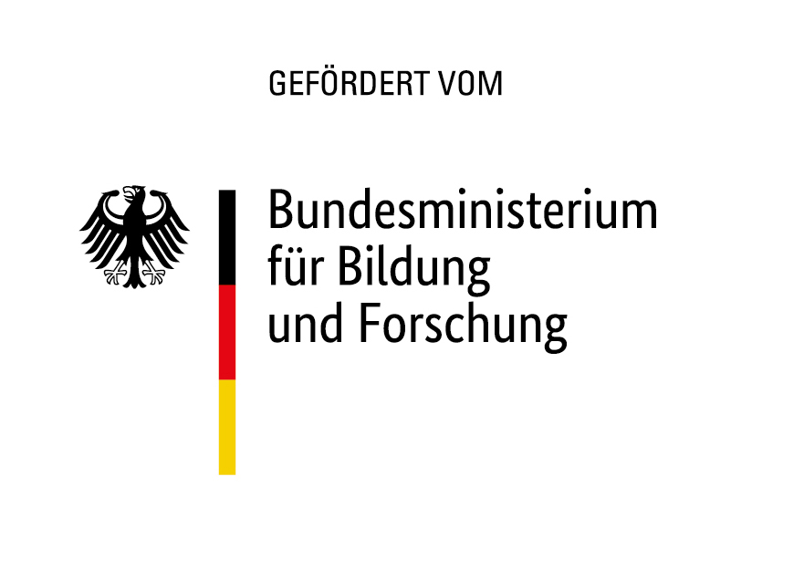
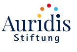
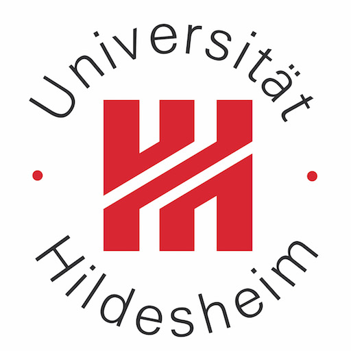
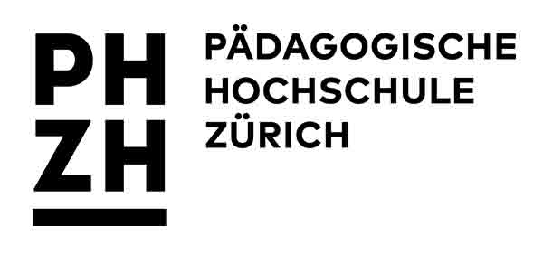

AI is already in the process
Students prompt, copy, paste, evaluate, accept, reject, and integrate AI suggestions while writing.
GENIUS/DARIUS project
Aim: Transfer effective argumentation instruction in science into classrooms.
Own share: EUR 670,000.
Team from psychology, subject didactics, and computational linguistics.


Grant acquisition

Aim: professionalization concepts for AI-based feedback systems and writing agents.
Project period: 2023-2025.
BMBF-funded. Own share: EUR 196,546.
Teacher professional development

Human anchor
2,314 TOEFL argumentative essays from year 11 students.

PISA data source


PISA process evidence

Argumentation instruction

Scalable learning environments connect writing research to adaptive instruction, learning analytics, and Dortmund collaboration.
Grant acquisition
Research question: How can teachers be trained to assess human-AI-written texts?
Teacher-side project on assessment training and diagnostic competence in German.
Start: end of 2026. Own share: EUR 344,650.
Teacher training environment

Grant acquisition

Aim: Support teachers in assessing primary students' reading development. Start: autumn 2026.
Total project funding: EUR 880,000. Own share: EUR 220,000.
Grant acquisition
Research question: How does generative AI affect learning and well-being?
Start: end of 2026.
Project volume: EUR 3,450,000. Own share: EUR 138,000.
Danke



